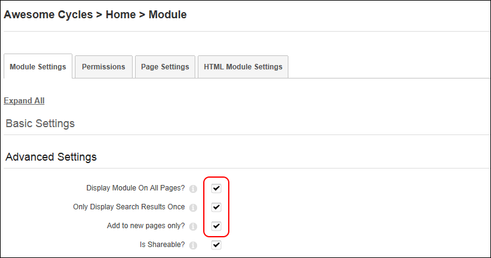
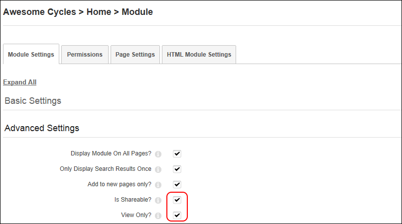
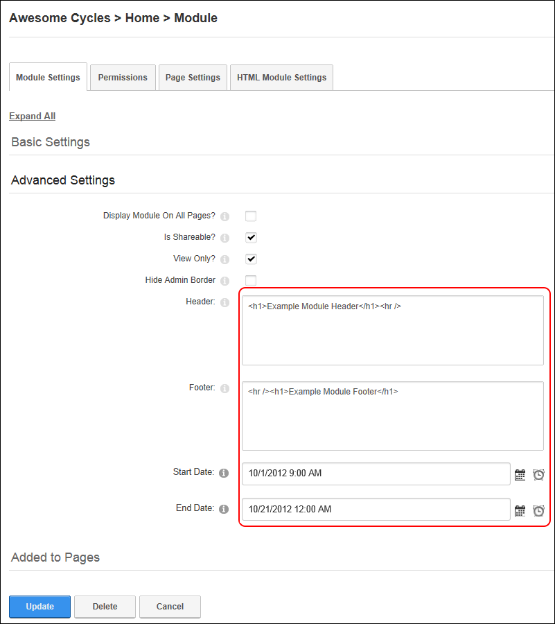
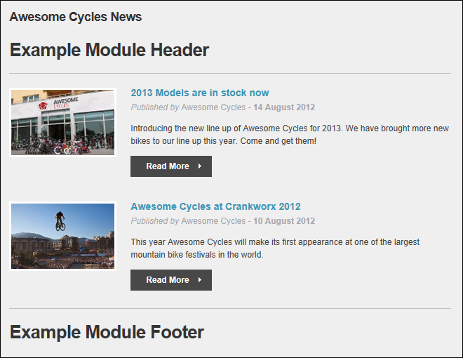
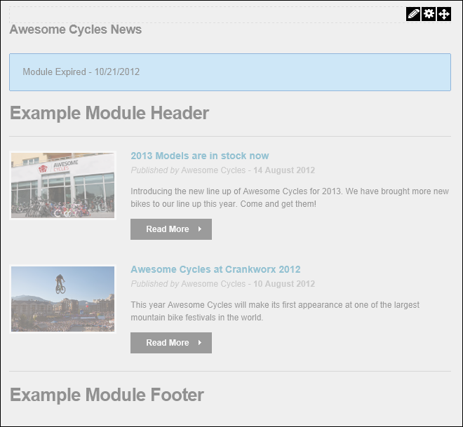

Configuring Advanced Module Settings
How to configure the advanced module settings for the current module. This section allows you to set the pages this module is displayed on, configure module sharing, set start and end dates for a module and display a header and footer above and below the module content.
This section allows you to display a module on multiple pages including the Admin pages, or to only on newly added pages. Module content is shared therefore changes made on one instance of the module are reflected on all instances of the module. If you choose to only display the module on new pages, this doesn't affect the pages where it is already located. Once a module is set to display on all/new pages, if you make changes to any module settings located on the Module Settings tab, then these changes will be reflected on all copies of the module. However, changes to module settings located on the Page Settings tab are unique to the module that you have changed.
-
- Select the Module Settings tab.
- Expand the Advanced Settings section.
- At Display Module On All Pages?, select from these options:
- Mark
 the check box to add this module to all pages. Note: Once this setting is updated you can delete a single instance of a module from any page and all other instances on other pages will remain and be unaffected. Enabling this setting, reveals two additional fields that allow you to customize this setting.
the check box to add this module to all pages. Note: Once this setting is updated you can delete a single instance of a module from any page and all other instances on other pages will remain and be unaffected. Enabling this setting, reveals two additional fields that allow you to customize this setting.
- At Only Display Search Results Once, to display a single search results for all instances of this module - OR - to display the search results for each instance of this module. For example, if there are five instances of the module on the site and this field is unchecked, whenever a search is made, there will be five search results for the same content with each result going to a different module.
- At Add To New Pages Only?, to add this module to each new pages that is added to the site - OR - to add the module to both existing and new pages. This is the default setting.
- Unmark
 the check box to display this module on this page only. This will remove all other instances of this module apart from the one you are currently working on. It doesn't matter which module you choose to enable or disable this feature using.
the check box to display this module on this page only. This will remove all other instances of this module apart from the one you are currently working on. It doesn't matter which module you choose to enable or disable this feature using.

- At Is Shareable? select from these options to configure this settings:
- Mark the check box to allow this module to be shared. This allows the module to be displayed in the "Add Existing Module" list on the Control Panel. For Evoq Content and Evoq Content Enterprise, this also allows modules that support module sharing to be shared with other sites that belong to the same Site Group. Module Sharing between sites is available for modules that have been developed to support this feature. SuperUsers should set a module as supporting module share via the Host > Extension page to remove the warning message that is displayed in the default configuration. See "Editing Module Extension Settings"
- At View Only?, if this module can only be edited via this site - OR - if this module can be edited from other sites that it is shared with.
- Unmark the check box if this module to disable module sharing for this module..

- At Hide Admin Border, select from these options to set the visibility of the "Visible By Administrators Only" message. The message is displayed to Administrators and SuperUsers on modules which are only visible to Administrators. This message appears on the page where the module is located as well as on the Module Settings page for that module. This message is also displayed by default for any modules which are added to the Admin pages.
- Mark the check box to hide the message. This will hide the message even if the module is only visible by administrators.
- Unmark the check box to display the message. This displays the message even if the module is only visible to members in the Administrator role (which by default includes all hosts).
- In the Header text box, add, edit or delete the header that is displayed above the module content. Plain text and basic HTML such as headings, italic and bold can be used.
- In the Footer text box, add, edit or delete the footer that is displayed below the module content.
- At Start Date, click the Calendar
 button and select the first day that the module will be visible on the site. This displays the date you selected along with the default time of 12:00:00 AM. To modify this default time, click the Time button and select a different time. Modules with a start date are only visible to Page Editors and Administrators prior to that date, enabling them to create content in advance. A "Module Effective - [start date]" message is displayed to these users prior to the start date.
button and select the first day that the module will be visible on the site. This displays the date you selected along with the default time of 12:00:00 AM. To modify this default time, click the Time button and select a different time. Modules with a start date are only visible to Page Editors and Administrators prior to that date, enabling them to create content in advance. A "Module Effective - [start date]" message is displayed to these users prior to the start date.
- At End Date, click the Calendar button and then select the last day that the module will be visible on the site. This displays the date you selected along with the default time of 12:00:00 AM. To modify this default time, click the Time button and select a different time. When the end date and time is reached, the module is only visible to Page Editors and Administrators, enabling them to retain, edit and republish the content as desired. A "Module Expired [end date]" message is displayed to these users once the module has expired.

-
Click the OK button to confirm.
Below are some examples of modules with some of these Advanced Module Settings applied.

A module with a header and footer displayed above and below the module content

The Module Expired message that is displayed to Administrators once the module has expired.